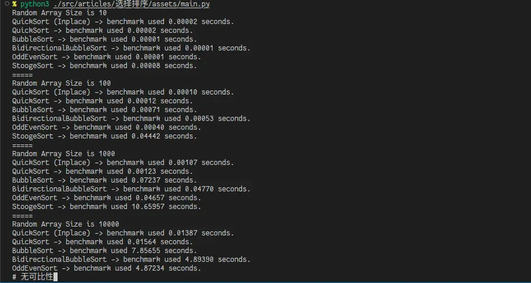

在交换类排序算法中，已知最好的选择算法是快速排序。
冒泡排序
很简单的排序算法，效率很低，但是简单易懂。初中就学过。具体的来讲，就是一遍一遍的扫描数组，碰见顺序不对的把他俩调换一下位置。最后还需要额外扫描一遍确保排序好了。这是一个原地的排序算法。
def bubble_sort(array: list[int]) -> None:
swapped: bool = True
while swapped:
swapped = False
for index in range(len(array) - 1):
if array[index] > array[index + 1]:
array[index], array[index + 1] = array[index + 1], array[index]
swapped = True双向冒泡排序
和冒泡排序类似，但是每次扫描过后不是从头再来，而是从反方向扫描，减少总的扫描次数。同样是原地排序。
def bbs(array: list[int]) -> None:
swapped: bool = True
while swapped:
swapped = False
for index in range(len(array) - 1):
if array[index] > array[index + 1]:
array[index + 1], array[index] = array[index], array[index + 1]
swapped = True
for index in range(len(array) - 2, 0, -1):
if array[index] < array[index - 1]:
array[index - 1], array[index] = array[index], array[index - 1]
swapped = True奇偶排序
和冒泡排序类似，但是步长为 2 。先是比较数组中相邻的（奇-偶）位置数字对，下一次再（偶-奇）比较位置数字对，如果该奇偶对是错误的顺序（第一个大于第二个），则交换。同样是原地算法。
def odd_even_sort(array: list[int]) -> None:
sorted: bool = False
while not sorted:
sorted = True
for i in range(1, len(array) - 1, 2):
if array[i] > array[i + 1]:
array[i], array[i + 1] = array[i + 1], array[i]
sorted = False
for i in range(0, len(array) - 1, 2):
if array[i] > array[i + 1]:
array[i], array[i + 1] = array[i + 1], array[i]
sorted = False皮匠排序
，来源是算法导论 7.3 练习题。不过第三版已经改成 Alternative quicksort analysis 了（
如果最后一个值小于第一个值，则交换
如果当前集合元素数量大于等于3：
- 使用皮匠法排序前2/3的元素
- 使用皮匠法排序后2/3的元素
- 再次使用皮匠法排序前2/3的元素
很慢很慢。
def stooge_sort(array: list[int], start=0, end=None) -> None:
if end == None:
end = len(array) - 1
if array[start] > array[end]:
array[start], array[end] = array[end], array[start]
if end - start + 1 > 2:
divide = floor((end - start + 1) / 3)
StoogeSort.stooge_sort(array, start, end - divide)
StoogeSort.stooge_sort(array, start + divide, end)
StoogeSort.stooge_sort(array, start, end - divide)快速排序
快速排序就是，选择一个基准元素，通常是中间那个，把大于它的放在一边，小于它的放在另外一边，再对两边的分别继续这样操作。最后就能得到排序好的序列了。
最容易理解的「标准版本」如下：
def quicksort(array: list[int]) -> list[int]:
# 如果只有一个元素，直接返回
if len(array) <= 1:
return array
left: list[int] = list()
right: list[int] = list()
# mid 是 pivot 元素的索引
mid: int = (len(array) - 1) // 2
for index, element in enumerate(array):
# 对于每一个元素，大于 pivot 的放在右边，否则放在左边
if index == mid:
continue
right.append(element) if element > array[mid] else left.append(element)
# 不要忘记中间的 pivot 元素
# 它必须单独列出来，不能放在左边或者右边
return quicksort(left) + [array[mid]] + quicksort(right)使用 quicksort(original_array) 来对数组排序。
除此以外还有一个原地排序的版本。常见于 C 等的实现。
def partition(array: list[int], low: int, high: int) -> int:
pivotElement = array[(low + high) // 2]
left, right = low - 1, high + 1
while True:
left, right = left + 1, right - 1
while array[left] < pivotElement:
left += 1
while array[right] > pivotElement:
right -= 1
if left >= right:
return right
array[left], array[right] = array[right], array[left]使用 quicksort(numbers, 0, len(numbers) - 1) 来进行排序。
参考：
另附：Javascript 写的简短版本（来源）：
const quickSort = (arr) => {
return arr.length <= 1
? arr
: quickSort(arr.slice(1).filter(item => item <= arr[0])).concat(
arr[0],
quickSort(arr.slice(1).filter(item => item > arr[0]))
);
};测试
对上述排序算法进行测试，使用一个装饰器进行计时。
from random import randint
import time
def timeit(function):
def func(*args, **kwargs):
time_start = time.perf_counter()
result = function(*args, **kwargs)
print(f"{function.__name__} used {time.perf_counter()-time_start:.5f} seconds.")
return result
return func
RANDOM_ARRAY = [randint(-32768, 32768) for i in range(10000)]
ANSWER = sorted(RANDOM_ARRAY)
if __name__ == "__main__":
# 各个测试代码结果如下：

可以在这里下载测试代码。
除此以外，这个站点描述了很多经典排序算法，均为 Java 实现：